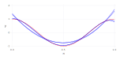

hw3
Table of Contents
1 Exercise 7
Set up the problem.
x = [1/21 * i for i=0:20] g = [cos(2 * pi * xi) for xi in x]
1.1 Question 2
function vandermonde(n) return [x[row]^(n+1-col) for row = 1:21, col = 1:n+1] end for n = 2:5 A = vandermonde(n) H = A' * A eigenvalues = eigvals(H) convex_message = minimum(eigenvalues) > 0 ? "IS strictly convex" : "IS NOT strictly convex" print (""" for n = $n, the eigenvalues are, $eigenvalues, so the objective function $convex_message """) end
for n = 2, the eigenvalues are, .058721999581535136 2.513796882657178 28.651287042247482 , so the objective function IS strictly convex for n = 3, the eigenvalues are, .00213831884287705 .1404952658897972 3.3836989654281506 30.221264907348065 , so the objective function IS strictly convex for n = 4, the eigenvalues are, 7239098790859635e-20 .006427958719556766 .22978182748872406 4.080481969553473 31.29586233970504 , so the objective function IS strictly convex for n = 5, the eigenvalues are, 2322819801408405e-21 .00026264696267439436 .012430993294642504 .31946415677363965 4.650161709403046 32.078970370848936 , so the objective function IS strictly convex
1.2 Question 3
The objective function is strictly convex for all n. That means we just need to solve AT (Ac - g) = 0 to find coefficients that satisfy the optimality conditions.
AT (Ac - g) = 0 c = AT g / AT A
coefficients = [zeros(i)' for i=0:10] for n = 2:5 A = vandermonde(n) c = (A' * g)' * inv(A' * A) print( "for n = $n, the optimal coefficients are $c") coefficients[n] = c end
for n = 2, the optimal coefficients are 9.085986525310144 -8.939684136659025 1.4412294260907244 for n = 3, the optimal coefficients are 3.4848416185651128 4.107641355931426 -7.0890040752804815 1.312537510147594 for n = 4, the optimal coefficients are -40.764134744133735 81.13081255976772 -42.704427859466044 2.280326723421234 .9643541335833471 for n = 5, the optimal coefficients are -8.34258271045842 -20.90084257628726 64.49399165933984 -36.954132394358545 1.5670766919566959 .979435077058096
1.3 Question 4
Find the maximum absolute error and plot each n. Use the coefficients we save above to calculate the approximation for each n.
function approximate_solution(n, x) c = coefficients[n] return sum([c[n+1-i] * x^(i) for i=0:n]) end actual_solution(x) = cos(2 * pi * x) space = linspace(0,1,200) actual_values = [actual_solution(p) for p in space]
using Gadfly layers = Layer[layer(x=space, y=actual_values, Geom.line, Theme(default_color=color("red")))] for n = 2:5 estimates = [approximate_solution(n,p) for p in space] println ("For n = $n, the maximum absolute error is $(maximum(map(abs, estimates - actual_values)))") push!(layers, layer(x=space, y=estimates, Geom.line, Theme(default_color=color("blue")))) end draw(SVG("optimization_hw3_plot.jpg", 6inch, 3inch), plot(layers...)) #plot(layers...)
For n = 2, the maximum absolute error is 0.5875318147418431 For n = 3, the maximum absolute error is 0.8160164093636513 For n = 4, the maximum absolute error is 0.09306918682747778 For n = 5, the maximum absolute error is 0.1570542527495924

1.4 Question 5
Our method seems to be robust enough, since the maximum absolute error does not change very much when we add some noise.
g = [cos(2 * pi * xi) + (rand() - 0.5) * 0.2 for xi in x] for n = 2:5 A = vandermonde(n) coefficients[n] = (A' * g)' * inv(A' * A) end for n = 2:5 estimates = [approximate_solution(n,p) for p in space] println ("For n = $n, the maximum absolute error is $(maximum(map(abs, estimates - actual_values)))") end
For n = 2, the maximum absolute error is 0.63330368361623 For n = 3, the maximum absolute error is 0.8934019708919156 For n = 4, the maximum absolute error is 0.06869936213255201 For n = 5, the maximum absolute error is 0.12288476386444813